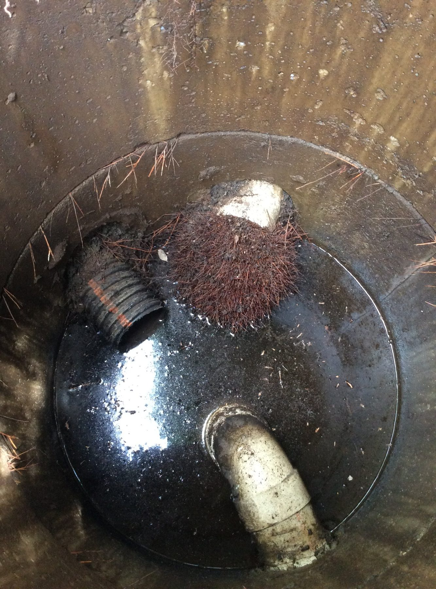
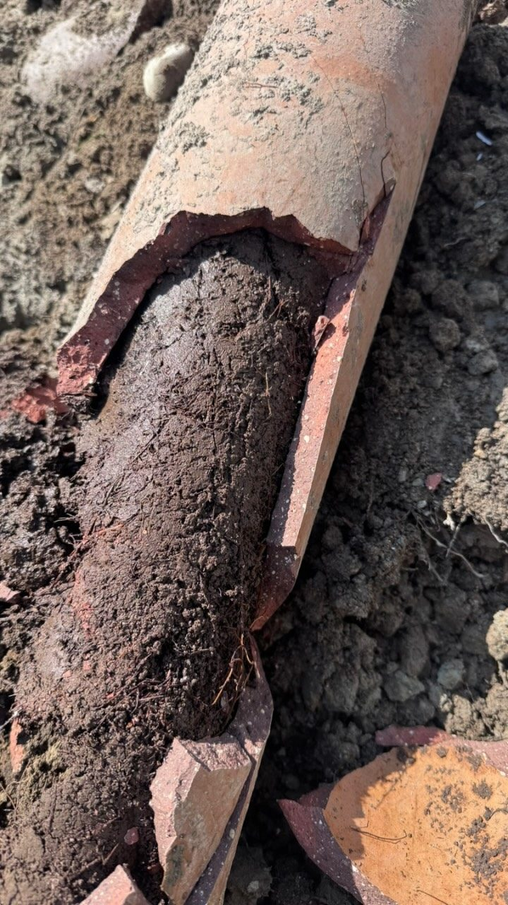
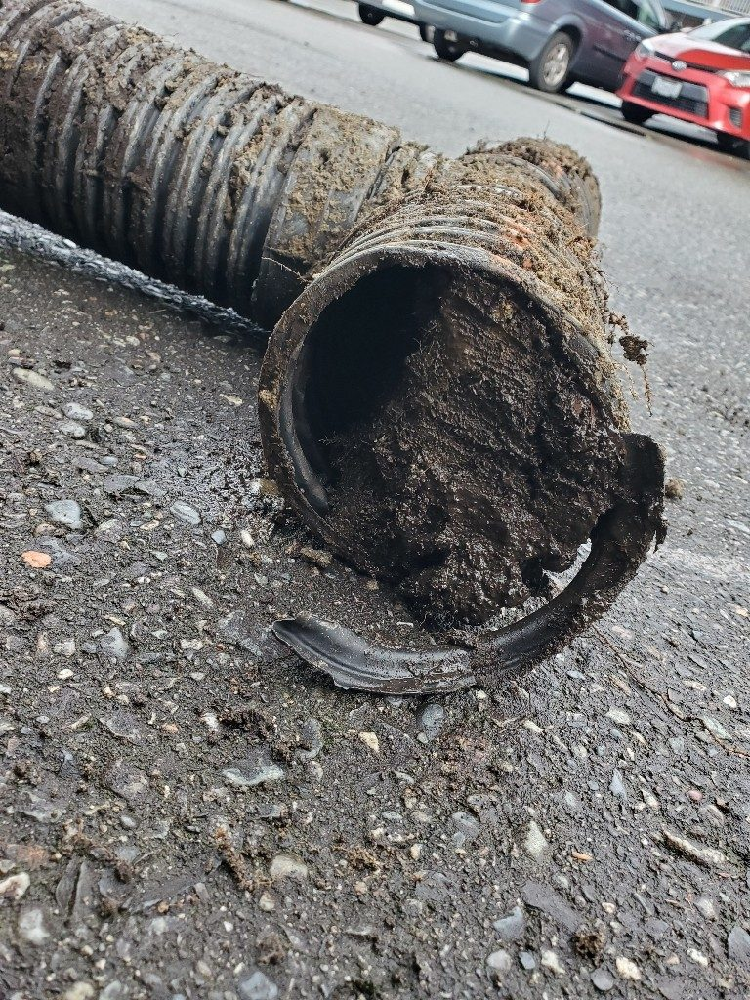
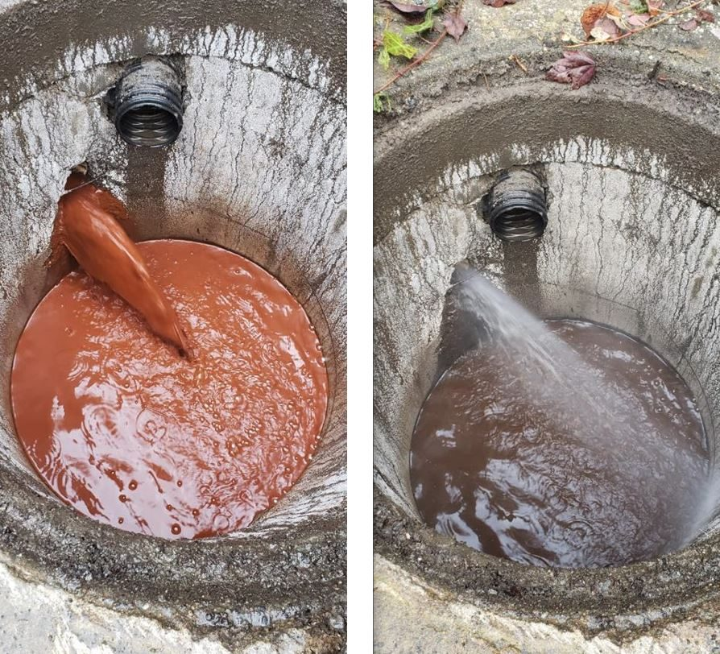

Drains & sewers · Burnaby & the Lower Mainland
Blocked drain cleared today, not next week
Kitchen sinks, tubs, toilets, laundry lines and sanitary sewer mains across Burnaby and the Lower Mainland.

Grease and soap build up on kitchen lines. Hair and soap stop showers and tubs. Toilets take things they were never meant to take. Whatever the cause, we clear it with the right tool for the job: a snake first, pressure-assisted jetting when the line needs a proper clean, and a camera to confirm it's actually clear.
Older homes in Burnaby, New Westminster and East Vancouver often still have clay tile sewer lines. Roots find the joints, tiles crack and the line develops dips that hold waste. We snake and inspect those lines, and when a section has failed we map its exact location and depth with the camera so the repair or replacement is as small and as quick as it can be.
You get a price before we start, a technician who explains what the camera is showing, and a clean work area when we leave.
Price before work starts. Free home plumbing inspection with every call.
Call 778-980-1883 day or night, or send a request and we'll call you back.
From the job
What this work looks like



- 5.0 on Google · 260 reviews
- HomeStars Best of the Best 2025
- BBB A+
- Red Seal journeymen
- Licensed & insured
- Burnaby-based since 2015
Reviews
From people who called about this
Questions
Asked about drain cleaning & sewer lines
Will you just upsell me to hydro jetting?
No. If a snake clears it, that's what we do. One customer's review puts it well: Jeremy kept snaking until it resolved instead of jumping to a pricier flush.
How do I know the line is actually clear?
We run the camera after clearing and show you the picture. You'll see the pipe wall, any roots or cracks, and where the line runs.
My sewer backs up every spring. Why?
Usually roots in a clay tile line. Roots grow back, so the fix is either a regular snaking schedule or replacing the failed section. We'll show you both options with prices.
Do you handle the city side?
We obtain City permits for any sewer excavation and pass the inspections. A New Westminster job last year included the plumbing permit, tree protection permit and excavation.
Related
Often booked together
Ready when you are, 24/7
Burnaby, New Westminster, Coquitlam, Port Moody, Vancouver, Surrey and Bowen Island.